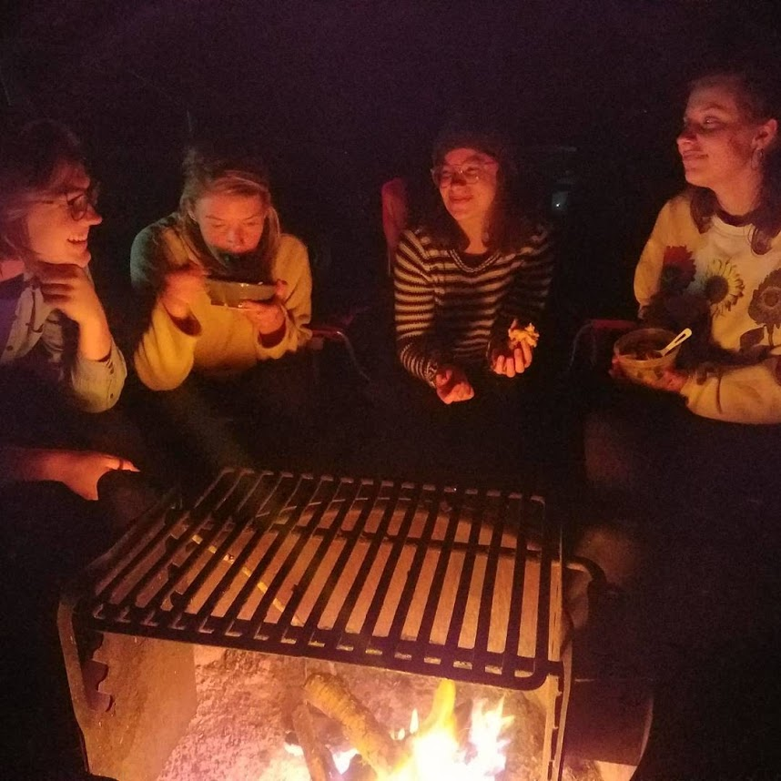
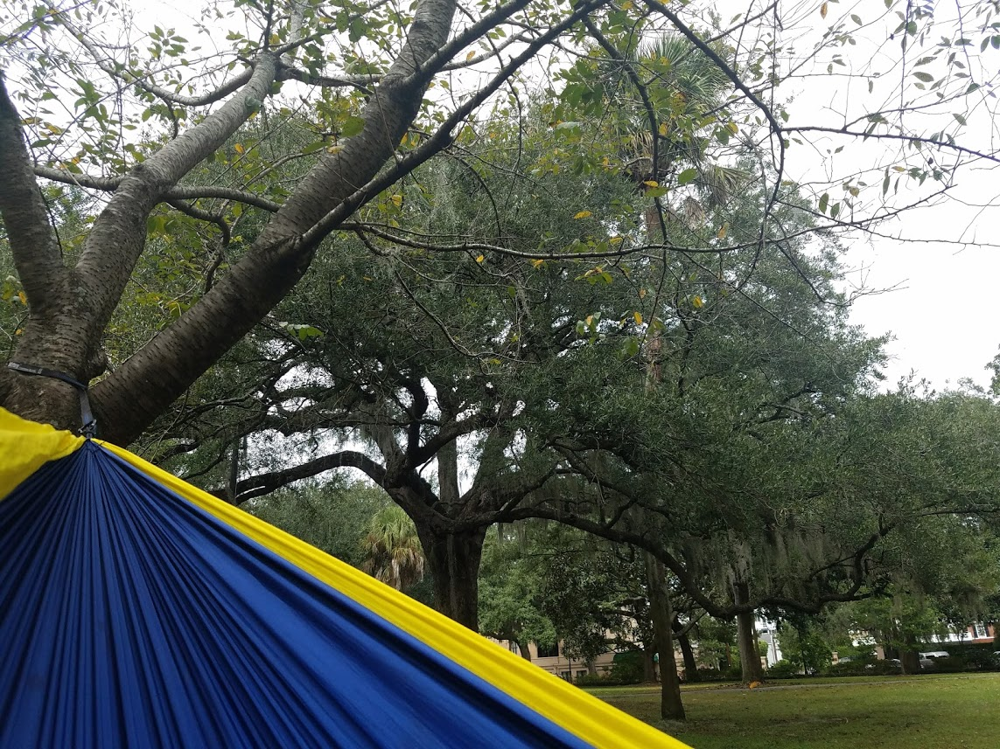

◈ E l i z a b e t h F r a n c i n a W i l k e s ◈
student, researcher, and organizer / / / for food justice + regeneration
>>> I aim to bring the best of my Type 7 Enthusiast personality and energy to my studies and engagements.
>>> 🔥 Speaking of fire, I love bonfires; gathering around a fire is one of my favorite things to do in this world. 🔥
Research Interests
- What is food policy?
- Is this just a fleeting buzzword, or will this concept endure and grow?
- What does effective food policy look like in practice?
- How does one craft effective food policies - i.e., do not perpetuate inequity - in the context of a world shaped by [racial] capitalism?
- How can communities come together to (re)create an "Ag of the Middle" ?
- This middle concerns both mid-size operating farms and corresponding infrastructure of the “middle,” including processing and aggregation.
- What does it take to create a world where everyone can eat Real Food (i.e. foodways that are contingent on nourishment instead of exploitation)?
- How can social movements work toward this end?
| i m a g e s |
o f |
l i f e |
|  |
 |
|
What's Next?
who knows...however i'll be paying the bills, i'll make certain that i'm engaging in provocative conversations -- taking those of Tunde Wey as inspiration.
This is a living document.
Information is up to date as of 11/15/2017;
No guarantee of accuracy beyond the above date. Please contact Elizabeth with any questions or concerns.
[ all of the photos on this web page were captured with a personal Samsung Galaxy S7 phone camera ]